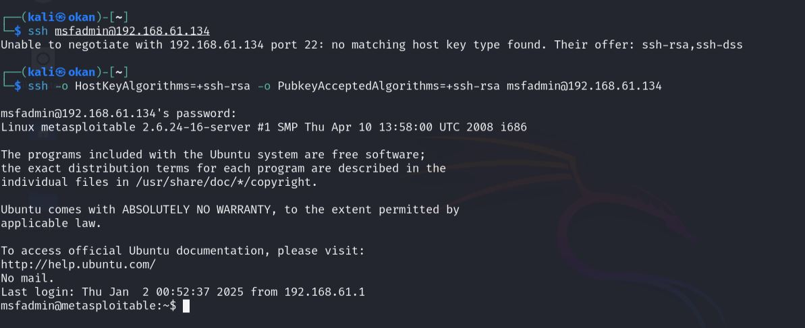

Bu yazıda, BTK-USOM stajım sırasında gerçekleştirdiğim güvenlik testlerinden birini detaylı olarak anlatacağım. Metasploitable 2, güvenlik uzmanları ve öğrenciler için özel olarak hazırlanmış, kasıtlı olarak güvenlik açıkları barındıran bir Linux dağıtımıdır. Bu sanal makine, güvenlik testlerini güvenli bir ortamda pratik yapabilmek için tasarlanmıştır ve içerisinde SSH, FTP, HTTP gibi birçok zafiyetli servis bulunmaktadır.
BTK-USOM stajım sırasında Metasploitable 2 üzerinde gerçekleştirdiğim güvenlik testlerinden SSH servisine odaklanarak, bir güvenlik testinin nasıl yapıldığını adım adım anlatacağım. SSH, sistemlere uzaktan güvenli erişim sağlayan önemli bir servis olduğu için, güvenlik yapılandırması kritik önem taşır.
1. Hedef Sistem Bilgisi
İlk olarak Metasploitable 2 sanal makinesini WMvare üzerinde başlattık. Açılış ekranında bizi varsayılan giriş bilgileri karşıladı:
- Kullanıcı adı: msfadmin
- Parola: msfadmin
Bu bilgilerle sisteme giriş yaptıktan sonra, hedef sistemin ağ bilgilerini öğrenmek için terminal üzerinde ipconfig komutunu çalıştırdık:
Komut çıktısından gördüğümüz üzere, Metasploitable 2 sistemimiz 192.168.61.134 IP adresini almış durumda. Bu IP adresi, güvenlik testlerimiz sırasında hedef sistemimize erişmek için kullanacağımız adres olacak.
2. SSH Servis Analizi
Hedef sistemdeki SSH servisini analiz etmek için Nmap aracını kullandık. Nmap (Network Mapper), ağ keşfi ve güvenlik denetimi için kullanılan açık kaynaklı bir araçtır. Bu araç sayesinde hedef sistemdeki açık portları, çalışan servisleri ve bu servislerin versiyonlarını tespit edebiliriz.
Aşağıdaki Nmap komutunu kullanarak hedef sistemdeki SSH servisinin detaylı analizini gerçekleştirdik:
nmap -sV -sS -O 192.168.61.134
Kullandığımız Nmap parametrelerinin işlevleri:
-sV: Çalışan servislerin versiyon bilgilerini tespit eder-sS: TCP SYN taraması yapar, yarı-açık tarama olarak da bilinir-O: İşletim sistemi tespiti yapar
Bu parametreler dışında Nmap'in çok daha fazla özelliği bulunmaktadır. Terminal üzerinde nmap --help komutunu çalıştırarak tüm parametrelere ve detaylı açıklamalarına ulaşabilirsiniz.
Tarama sonucunda SSH servisi hakkında önemli bilgilere ulaştık:
- Port: 22/tcp (açık)
- Servis: OpenSSH 4.7p1
- Platform: Debian 8ubuntu1
Bu bilgiler, SSH servisinin eski bir sürüm kullandığını ve potansiyel güvenlik açıklarına sahip olabileceğini gösteriyor.
3. Bağlantı Testi
SSH (Secure Shell) bağlantısı yapmak için temel syntax şu şekildedir:
ssh [kullanıcı_adı]@[hedef_ip_adresi]
Örneğin normal şartlarda şu komut yeterli olurdu:
ssh msfadmin@192.168.61.134

Ancak SSH bağlantı denemesi sırasında modern SSH istemcilerinin güvenlik nedeniyle eski algoritmaları reddettiğini gördük. Bu nedenle bağlantı için özel parametreler kullanmamız gerekti:
ssh -o HostKeyAlgorithms=+ssh-rsa -o PubkeyAcceptedAlgorithms=+ssh-rsa msfadmin@192.168.61.134
Burada kullandığımız ek parametreler, eski RSA algoritmasını kabul etmemizi sağlıyor. Bu durum bile sistemin ne kadar eski ve güvensiz olduğunu gösteriyor.
Tespit Edilen Güvenlik Zafiyetleri
- OpenSSH 4.7p1 sürümü çok eski ve bilinen güvenlik açıkları mevcut
- Eski ve güvensiz SSH algoritmaları kullanılıyor
- SSH servisi varsayılan portta (22) çalışıyor
- Basit ve tahmin edilebilir kullanıcı adı/şifre kullanılmış
Güvenlik Önerileri
- SSH sürümünün güncel bir versiyona yükseltilmesi
- Güvenli SSH algoritmalarının kullanılması
- SSH portunun değiştirilmesi
- Güçlü parola politikalarının uygulanması